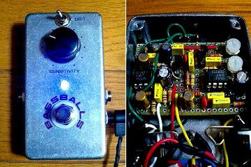
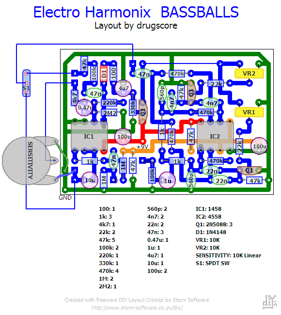
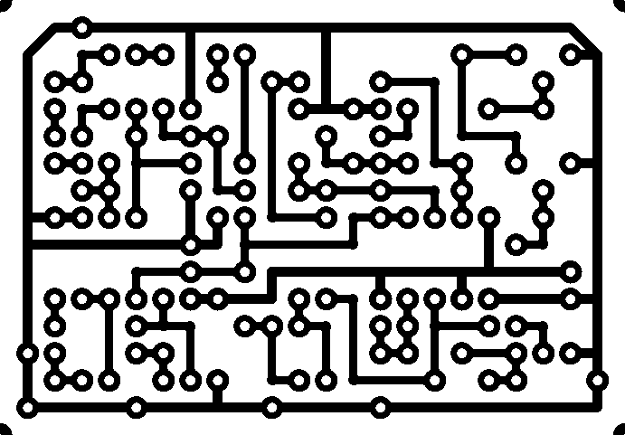

Electro Harmonix Bassballs
2008年12月28日 カテゴリー：自作エフェクター（アナログ）

Electro Harmonixのオートワウ、Bassballsです。
▽回路図
Topopiccione Electronics→Electro Harmonix BassBalls プロジェクトページ
▽レイアウト

▽PCB（横58.4mm縦40.6mm）

値を変更してるところがありますが、音にはあまり関係しないところです。スイッチを上に配置するために基板を小さくしています。
ひよこのページのQ-トリッパーに回路の解説や改造方法が載っています。オートワウでよく使われるブリッジドTフィルタというものです。Bassballsの場合このフィルタが2つ並列になっていて、それぞれ違う周波数帯にかかるようになっています。なのでツイン・ダイナミック・フィルターとかいっているようです。トリマーの設定次第では常にシュワシュワというノイズがのってしまいますので気をつけなければいけません。トリマーをポットとして外に出すのもよいと思いますが、あえて1ノブの方がシンプルでよいと思いそのままにしています。音はやっぱりエレハモならではのエグさかもしれません。ちょっと文章では説明しづらいです。DIST.スイッチは正直ちょっと使いにくい気がします…
ケースはなぜか買った状態でツルツルでした（バフがけされたやつと間違えたのかも）のでそのまま使っています。LEDはわかりにくいですが紫です。透明のシールを使ってそれっぽいデザインにしています。ノブで隠れて見えませんがポットの回転防止穴の位置をミスってしまいました。やっぱり穴あけを正確にするのは難しいです。
＜2009年2月16日＞友人のもとへ旅立ちました。
（2016年11月9日PCB追加）